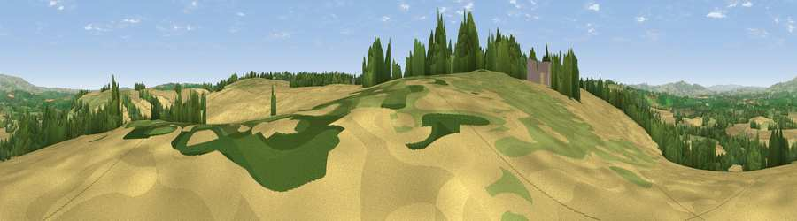

Viewpoint near Bockleton
#15909 in England · top 42% of its area beats it · near BockletonThe view, rendered

A 360° render of this exact spot computed from the terrain model, tree cover and land cover — summer colours, afternoon light, calibrated against photographs of famous viewpoints. Real trees, hedges and buildings will differ in detail.
The panorama
Grey silhouette: terrain skyline in each direction (720 bearings, Earth curvature and refraction included). Dashed green: skyline with trees (+15 m) and buildings (+8 m) as obstacles. Blue strip: how far the ground is visible on each bearing.
Where the view opens
Wedge length = distance to the farthest visible ground on that bearing (vegetation-aware). Rings at 10, 25 and 50 km.
What fills the view
53% cropland · 30% grassland · 17% woodland ·
Angular shares of the visible panorama (visual magnitude), not map area. Landscape diversity 0.44 (0–1 Shannon).
Key numbers
More beautiful places nearby
The staircase of upgrades: each row has a higher view potential than everything closer. Driving times are estimates from straight-line distance, calibrated against real road routing — check an actual route before setting out.
| Place | Direction | Drive | Score |
|---|---|---|---|
| Viewpoint near Bockleton | WSW · 1 km | ~2 min | 61.5 |
| Viewpoint near Tenbury Wells | NE · 2 km | ~4 min | 66.3 |
| Viewpoint near Bockleton | SE · 2 km | ~6 min | 68.1 |
| Viewpoint near Upper Sapey | E · 7 km | ~14 min | 69.8 |
| Viewpoint near Upper Rochford | ENE · 7 km | ~14 min | 71.0 |
| Viewpoint near Pencombe | S · 10 km | ~19 min | 72.8 |
| Viewpoint near Hope Bagot | N · 10 km | ~19 min | 73.7 |
| Viewpoint near Cleehill | N · 12 km | ~23 min | 82.3 |
52.26970, -2.60042 · source: screening · position refined by local search. Computed location — check access rights before visiting.